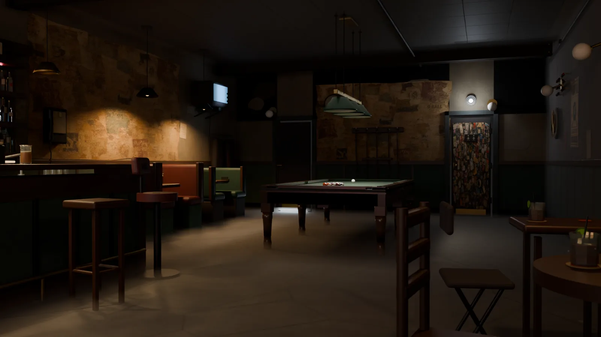
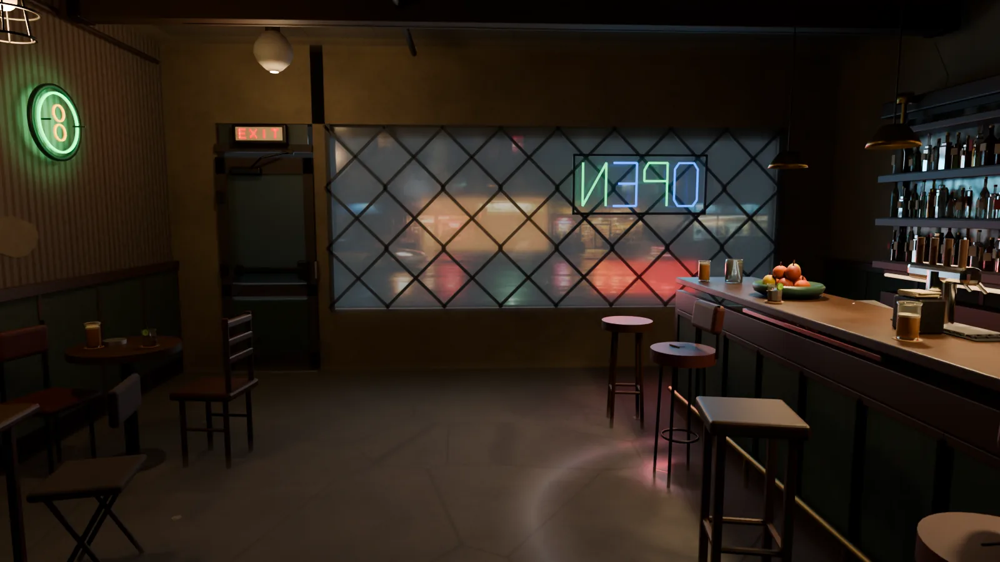
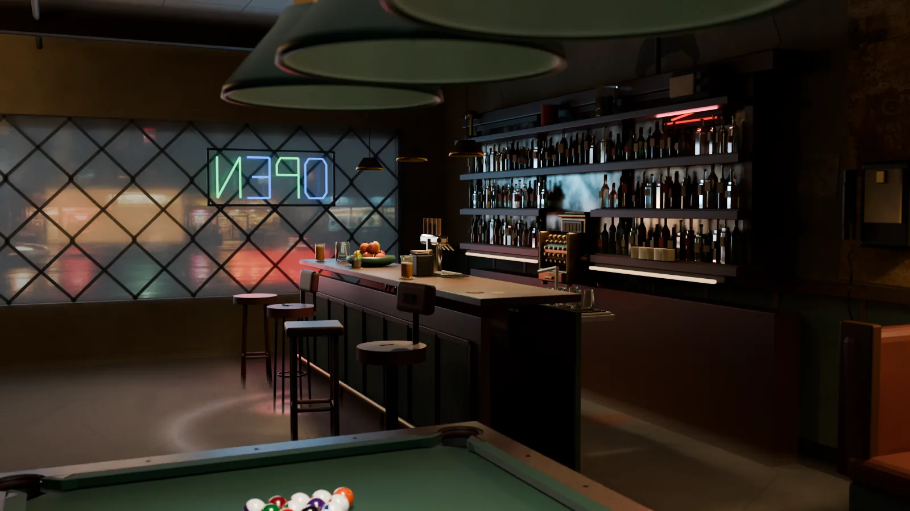
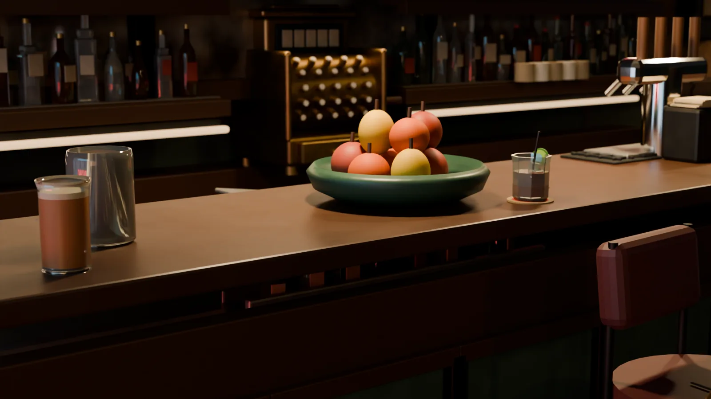
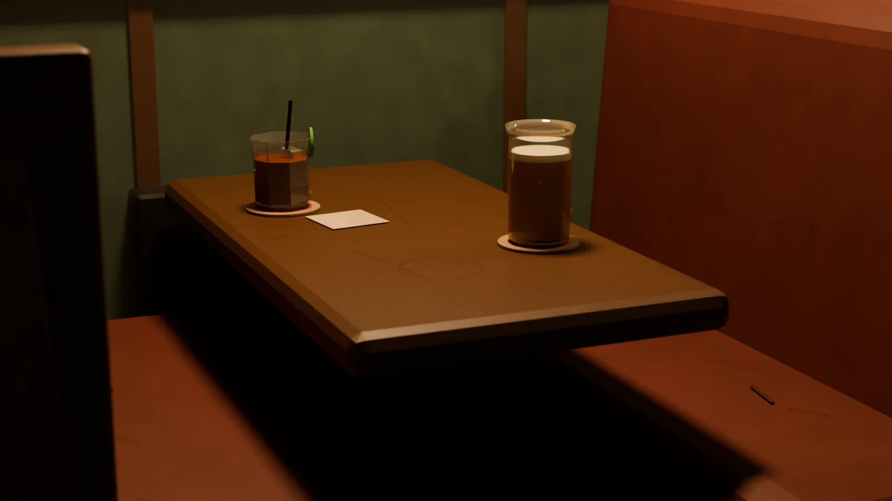
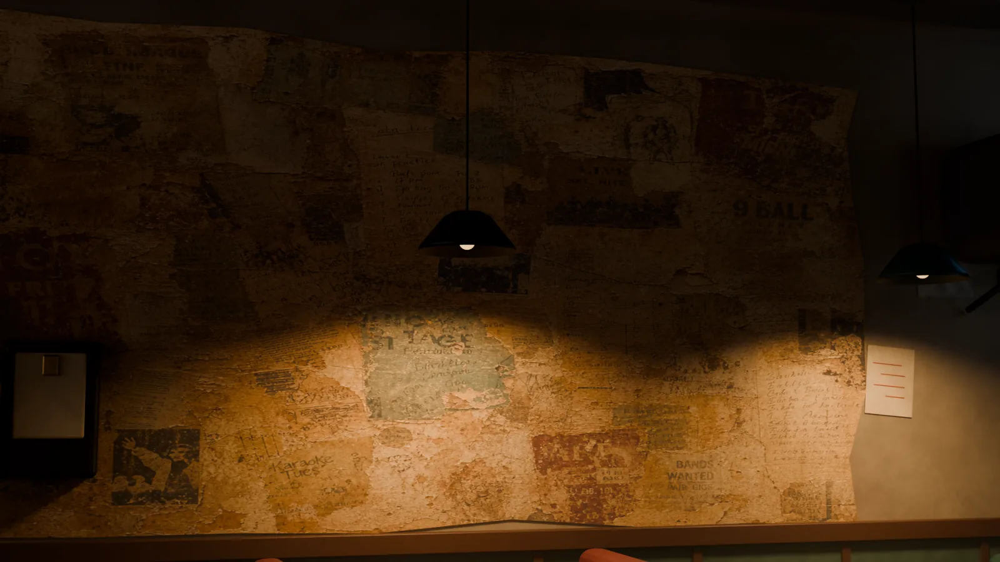
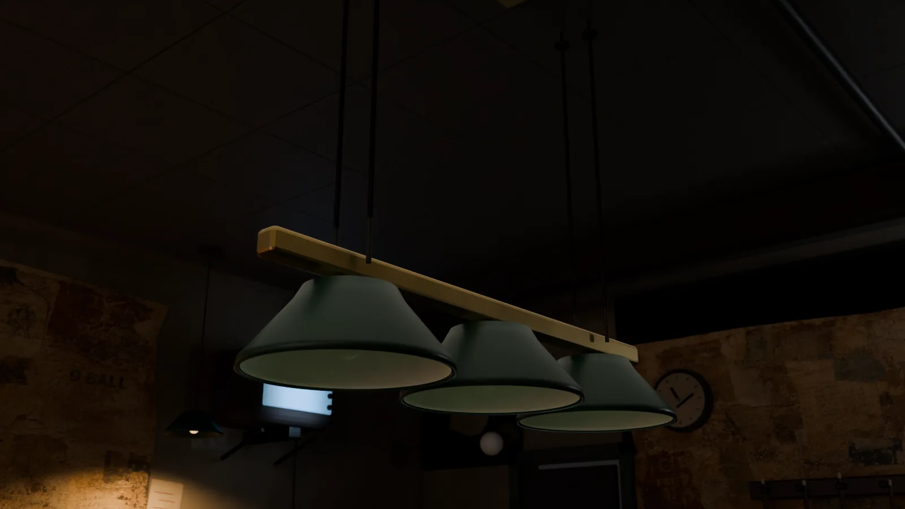
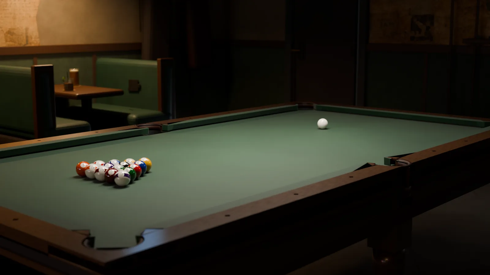
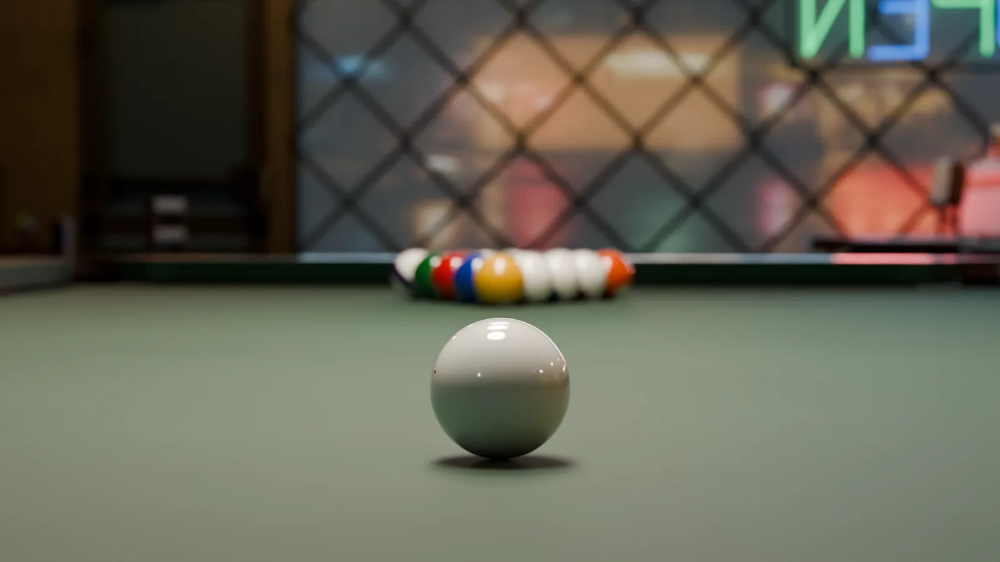
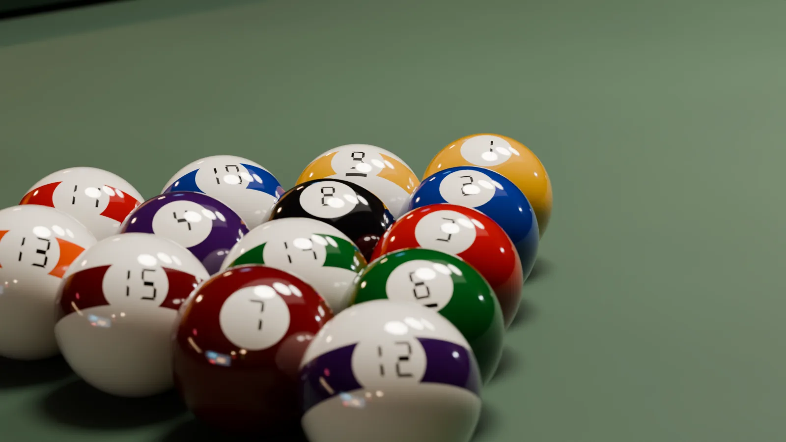

The Lab · Build 09 · Cinema build
A Lower East Side bar that never existed. Every brick, bottle, and bevel built from zero — the table to published tournament spec, the room aged by decades that never happened.
This is set design as a service: when a brand needs a place — for a film, a launch, a product world — we build the place. One scene, every camera angle, no location fees, no permits, no weather. These fifteen frames all come from the same working room.









